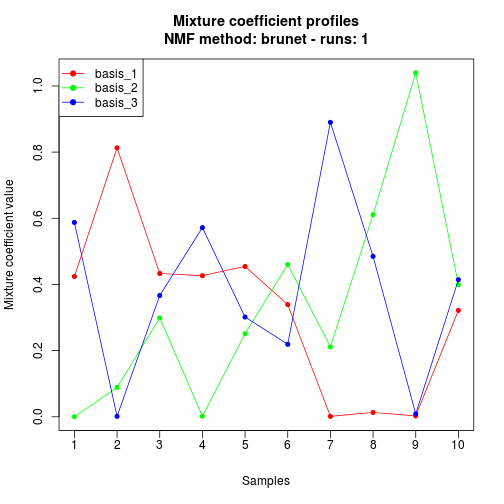
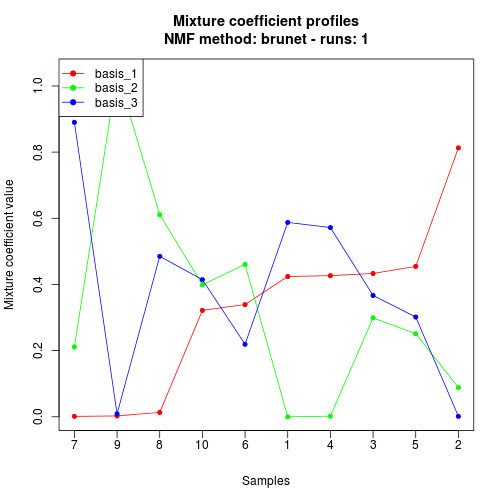
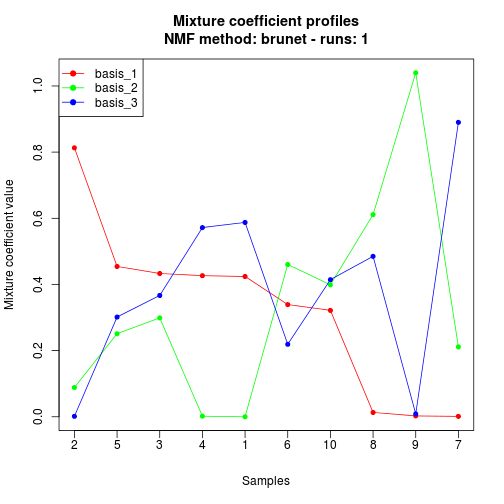
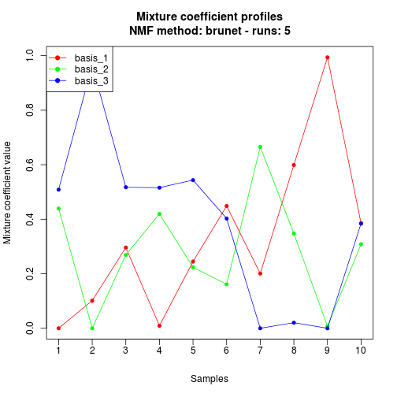
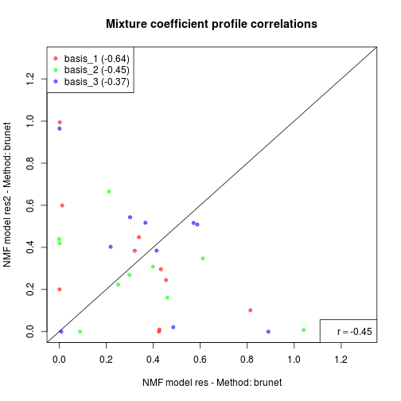

profplot(x, ...)
S3 (default)
`profplot`(x, y, scale = FALSE, match.names = TRUE, legend = TRUE, confint = TRUE,
Colv, labels, annotation, ..., add = FALSE)
x is the results from
multiple NMF runs.y is the results from
multiple NMF runs.FALSE.y should be subset and/or re-ordered
to match the profile names in x (i.e. the
rownames). This is attempted only when both x and
y have names.x of legend, that
specifies the position of the legend.x are
ordered before plotting. It is used only when y is
missing. It can be: x, that is
used to order the columns by x[,
order(x[abs(Colv),])]. Decreasing order is specified
with a negative index. x[, Colv] x[, order(Colv)] and as
argument annotation if this latter is missing or
not NA. order method. The columns are by x[,
order(Colv)] x). These are
used for labelling the x-axis.x). If not missing, a coloured raw
is plotted under the x-axis and annotates each sample
accordingly. If argument Colv is a factor, then it
is used to annotate the plot, unless
annotation=NA.matplot or matpoints.Plotting Expression Profiles
When using NMF for clustering in particular, one looks for strong associations between the basis and a priori known groups of samples. Plotting the profiles may highlight such patterns.
The function can also be used to compare the profiles from two NMF models or mixture coefficient matrices. In this case, it draws a scatter plot of the paired profiles.
# create a random target matrixv <- rmatrix(50, 10)# fit a single NMF modelres <- nmf(v, 3)profplot(res)
# ordering according to first profileprofplot(res, Colv=1) # increasing
profplot(res, Colv=-1) # decreasing
# fit a multi-run NMF modelres2 <- nmf(v, 3, nrun=3)profplot(res2)
# draw a profile correlation plot: this show how the basis components are# returned in an unpredictable orderprofplot(res, res2)
# looking at all the correlations allow to order the components in a "common" orderprofcor(res, res2)[,1] [,2] [,3] [1,] 0.9999041 -0.3570973 -0.6357179 [2,] -0.6441023 -0.4674412 0.9988413 [3,] -0.3814908 0.9986018 -0.4605362
profcor